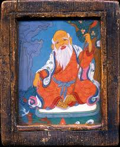

Белый старец, Старый владыка ( по монгольски Сагаан үбгэн ) является монгольским хранителем жизни и долголетия, один из символов плодородия и процветания в Буддийском пантеоне. Ему поклоняются как божеству в том, что ученые называют "белым шаманством", или если быть точнее "Бурятский желтый шаманизм", то есть, традиция шаманизма, в которую включили буддийские ритуалы и верования. Известно, что в Монголии и Бурятии распространен северный или как чаще говорят тибетский Буддизм. Но Белый старец известен практически только в Китае, Монголии и Бурятии, в Непале о нем практически ничего не знают, в Тибете очень редко встречаются тханки с его изображением.
Всвязи с широчайшей популярностью культа в монгольской среде, буддийской школой гелуг Белый Старец был включен в пантеон т. н. божеств местности. Была составлена сутра, где описывается встреча Белого Старца и Будды Шакьямуни.
В иконографии Буддизма традиционно Белый Старец изображается в виде старика с длинной белой бородой, в руках у него чётки и посох с навершием из головы макара. Существует несколько вариантов позы Белого Старца:
1. Он может изображаться в виде отшельника, сидящего под персиковым деревом в окружении брачных пар журавлей и оленей,
2. Либо он рисуется фронтально в полный рост. Первый вариант интересен тем, что Белый Старец держит в руках ещё и Книгу Судеб, что роднит его с китайским божеством долголетия Шоу Сином. У бурят распространено изображение Старца, сидящего на троне.